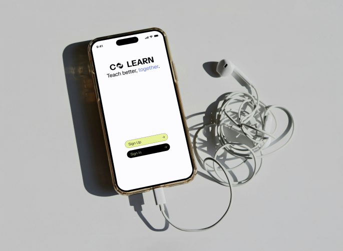

CoLearn
Conceptualized a connection based platform to support educators in San Diego who want to innovate in their classrooms, but feel pigeonholed due to policy. Completed as a case study project for the UCSD Design Lab & Educators Alliance.

Problem
Teachers feel isolated
Teachers feel isolated and students don’t feel like the system is meeting their needs. There’s mutual empathy: despite their frustrations, students recognized that teachers face systemic constraints that limit how innovative or personalized their curriculum can be.
Solution
CoLearn: A platform to connect educators
CoLearn is a platform built to help educators find and build relationships with peers they trust. Instead of another resource library or top-down training tool, we designed around peer networks, shared resources, and reflection tools that support collaboration and teacher-driven change through shared experimentation.
Teachers start with a short onboarding survey (11 questions) about their role, interests, and challenges. Once matched, educators can chat directly or join group discussions, with support for peer feedback and ongoing collaboration over time rather than a single one-off connection. Educators can also browse local events hosted by the Educators Alliance, extending the sense of community beyond the platform itself.
Research
Speaking with educators and students
Utilized a few methods to figure out how to feasibly solve the issues presented:
- Empathy mapping sessions with educators and students to understand what both sides were feeling/experiencing in the classroom.
- 8 interviews with teachers to understand more about their day-to-day, especially where they turn when something isn’t working, and what gets in the way of trying new approaches.
- 46 response survey to help test whether those patterns held across a wider group, looking at how teachers currently connect with colleagues, how often they get meaningful feedback on their practice, and which barriers like time, tools, or institutional support came up most.
- Conversations at the CAYS Conference showed us how teachers already gather and collaborate outside of school and what kind of support they wished they had.
Synthesis
Teachers feel isolated
A few themes kept surfacing across our interviews and survey responses:
- Curriculum rigidity that left little room for teachers to adapt to their students
- Declining student interest and engagement
- The broader tension of teachers wanting to support their students rather than teach to the test, while being held back by limited time, tools, and institutional support.
As I synthesized the research, these frustrations kept tracing back to isolation. Teachers weren't struggling because they lacked ideas or care for their students, but because they had no real space to share what they were facing, problem-solve with peers, or learn from people going through the same thing.
Key Features
Connecting teachers through CoLearn
The key features of CoLearn include the onboarding survey to understand where the teacher is at and what their needs are, which aids the matchmaking algorithm. Once they’ve onboarded, educators can connect with others who have expressed similar needs, whether it’s wanting to mentor vs seeking mentorship, seek collaboration, or simply make a likeminded friend. They can also view peer published articles and see what Educators Alliance events are occurring near them.
Testing and Validation
Clarifying the line between peer relationships and mentoring
6 of the 7 educators that participated in concept testing felt CoLearn would help them discover new teaching ideas faster than their current methods, a strong early signal that the peer-matching approach was addressing a real gap. The testing also pointed to two things that needed to be refined: users wanted a clearer line between mentorship and peer relationships within the matching experience, and older educators showed more hesitation toward the platform. That hesitation was a good reminder that trust, clarity, and simplicity couldn't be afterthoughts in the design.
Impact
Informing further EA work
The project concluded at the testing phase, so there wasn’t runway to iterate on the mentorship/peer clarity or older-educator hesitation findings before wrapping. This was presented to the Educators Alliance and Design Lab faculty, and the findings helped inform the Alliance's ongoing work supporting educators in San Diego.